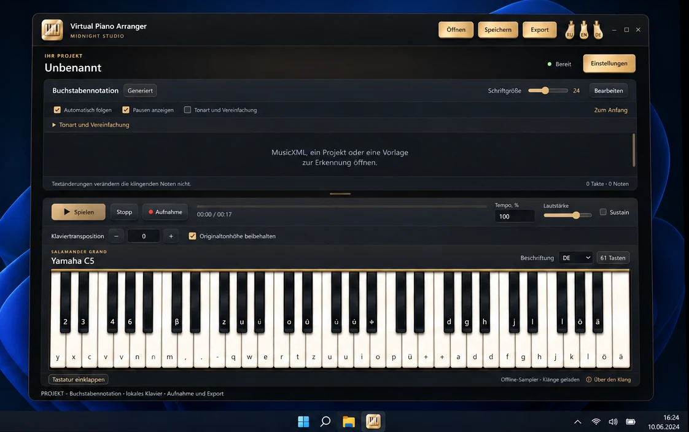
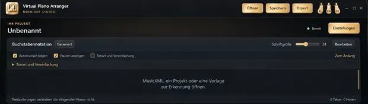

Virtual Piano Arranger — Anleitung
Noten als Buchstaben. Spielen am lokalen Klavier.
LoslegenIm Browser spielen
Datei öffnen
MIDI öffnen, eine einzelne oder die ausgewählten Stimmen anhören und importieren. Auch MusicXML, VPA-Projekte und Buchstaben-TXT ohne Dauern können geöffnet werden.

Notation anpassen
Tonart und Vereinfachung öffnen. Versatz und Akkordumfang zuerst prüfen, dann Anwenden; Abbrechen behält das Dokument. 100% erhält die ausgewählte Begleitungsvariante, nicht alle Quellnoten. 0% behält eine höchste Originalnote pro Anschlag. Ohne Vereinfachung stellt die vollständige Quelle wieder her. Die Originaltonhöhen-Verknüpfung kompensiert die Buchstabentransposition.
Pausen und Spielen
Pausen anzeigen hat gekoppelte Schalter über der Notation und im Tonartdialog. Das Zeichen bedeutet echte Stille der ausgewählten Stimmen; gehaltene Noten sind keine Stille. Bei Wiedergabe wird die Pause markiert; beim manuellen Spielen ist keine Pausentaste nötig. Spätere Noten spielen, um einen Anschlag zu überspringen.
Speichern und Aufnehmen
Ein VPA-Projekt speichert Noten und Einstellungen. TXT-Export speichert sichtbare Buchstaben, keinen exakten Rhythmus. Aufnahme erfasst den Klavierklang der Anwendung, nicht ein Mikrofon. WAV wird direkt exportiert; andere Formate benötigen separat verfügbares FFmpeg.
Grenzen
Dies ist eine Vorabversion. MIDI erklingt als Klavier, nicht mit ursprünglichen GM-Instrumenten. Erkennung mit der Vorlage vergleichen. TXT hat keine automatische Wiedergabe oder erfundenen Pausen. Audio-/Videoerkennung und YouTube-Import sind nicht verfügbar. Keine privaten Projekte oder Protokolle an öffentliche Fehlerberichte anhängen.